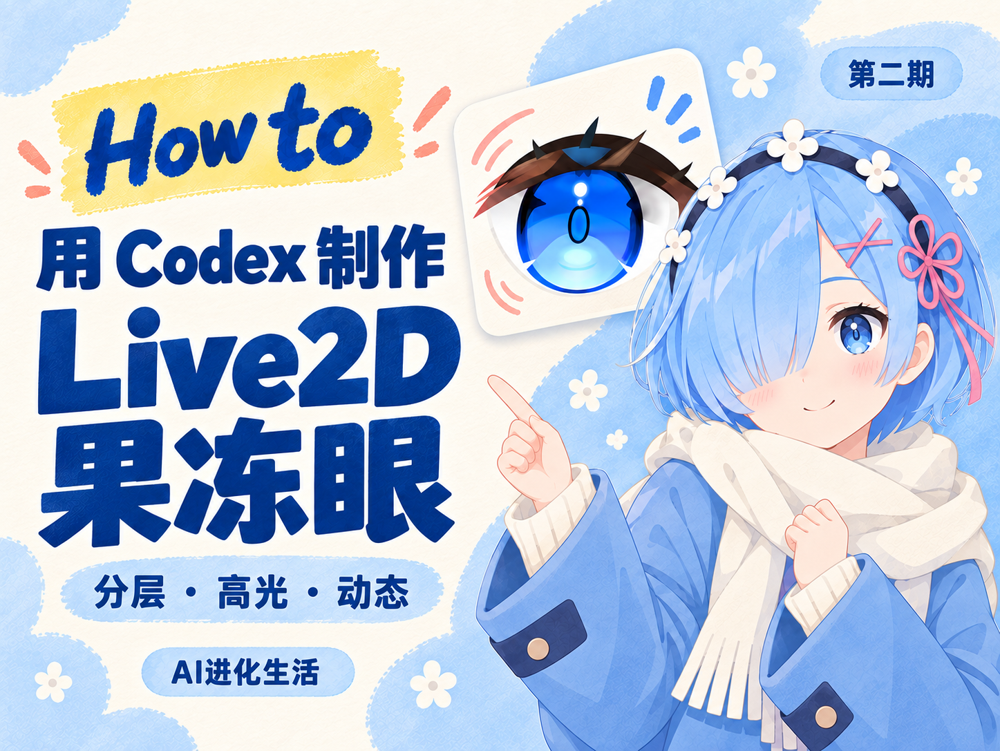
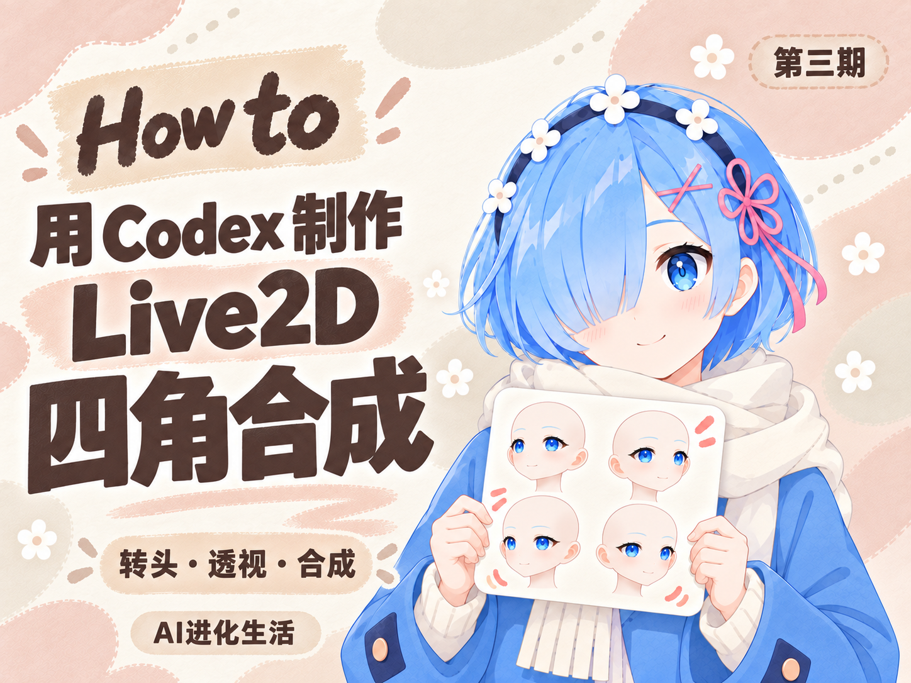
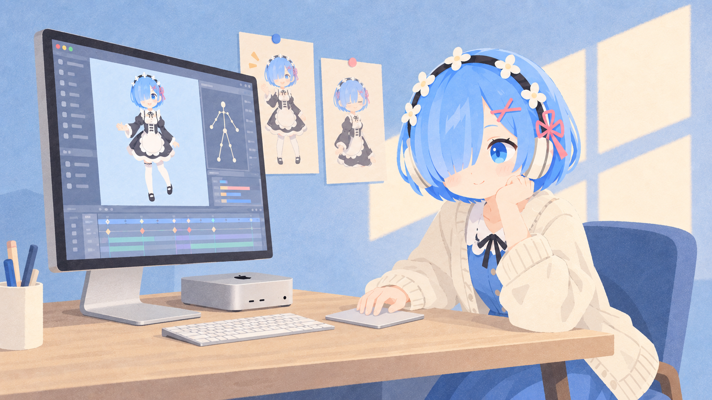
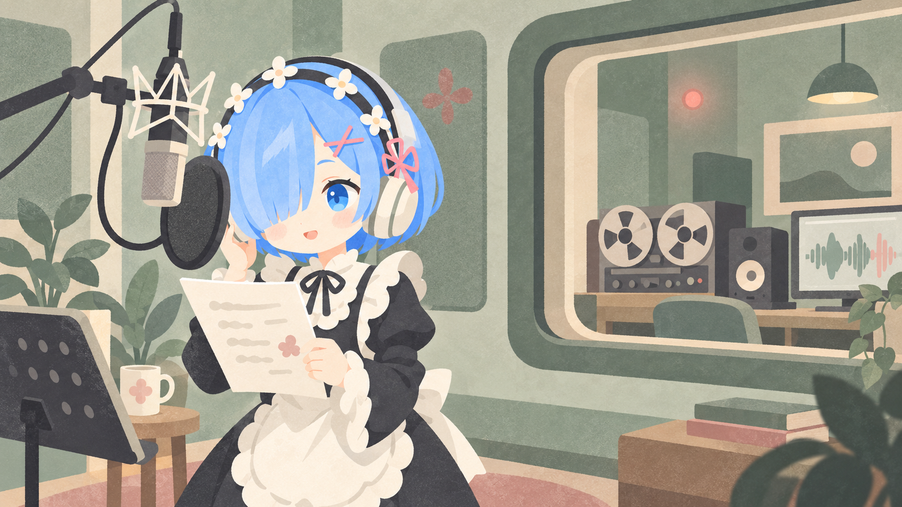
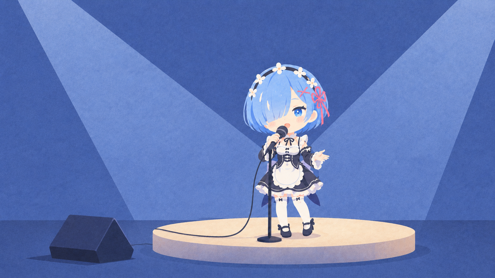

Live2D 虚拟角色
纯 AI 制作 · 用 Codex 从零制作
从一帧动作、一句话，到一首歌。我们围绕虚拟角色的动态表现、声音生成与音乐表达，开展研究、实验与作品制作。
HOW TO / AI 进化生活
角色创作、声音实验与 3D 互动。
五期系列记录与独立作品，持续探索新的表达。
纯 AI 制作 · 用 Codex 从零制作

分层 · 高光 · 动态

转头 · 透视 · 合成
拆发 · 装配 · 仿真
分轨 · 换声 · 混音
体素场景 · 交互体验
纯 AI 制作
01
以纯 AI 制作为方法，用 Codex 从零推进原画、建模与动态实现。围绕分层原画、表情口型与头发运动，持续验证角色的形体一致性与动态表现。
RESEARCH FOCUS分层原画 / 表情口型 / 动态仿真
Resonance
02
从语料整理到合成、试听与版本比较，探索角色音色、语言与表达方式之间的联系。
RESEARCH FOCUS语料构建 / 语音合成 / 对照试听
Expression
03
把人声分离、音色转换、逐句修整与混音串成可重复执行的流程，以对照试听检验每一次调整。
RESEARCH FOCUS人声分离 / 音色转换 / 修整混音
研究方法
04兴趣提出问题。
实验，让想法有据可循。
将“更像角色”拆成声音、形状、运动与表达上可以观察的问题。
固定输入、参考素材与版本，保留能够重复运行的起点。
通过姿态检查、对齐试听和问题记录判断变化，记录失败。
保存原始工程、实验记录与教程，明确已验证项和未解决项。
独立发起 · 共同探索
05REM Lab 创始人、独立课题组组长（PI）。负责研究选题、实验设计、工程实现与评测，围绕三个研究方向持续开展研究与作品制作。
一名现于多伦多（Toronto）工作的工程师已以研究协作者身份加入，共同推进课题探索与工程实践。
招募首批研究生
及研究协作者。
学院是自己开的，研究是认真做的。